Flujos de Usuario - Sistema de Gestion de Archivos IGAC
Resumen de Flujos Documentados
Este documento describe los principales flujos de interaccion del usuario con el sistema.
1. Flujo de Autenticacion
1.1 Login
1.2 Logout
1.3 Recuperar Contrasena
2. Flujo de Navegacion de Archivos
2.1 Explorar Directorio
2.2 Navegar a Subdirectorio
3. Flujo de Subida de Archivos
3.1 Subir Archivo Simple
3.2 Subir Carpeta Completa
4. Flujo de Descarga
4.1 Descargar Archivo
4.2 Descargar Carpeta (ZIP)
5. Flujo de Renombrado con IA
5.1 Smart Rename
5.2 Validacion de Nombre IGAC
Diagrama 11
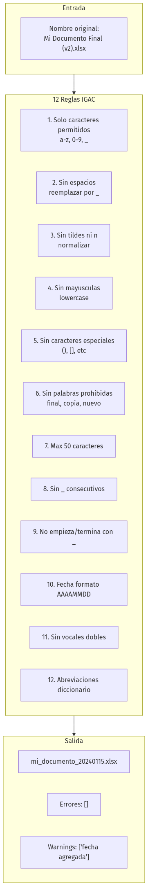
6. Flujo de Permisos
6.1 Asignar Permiso (Admin)
Diagrama 12
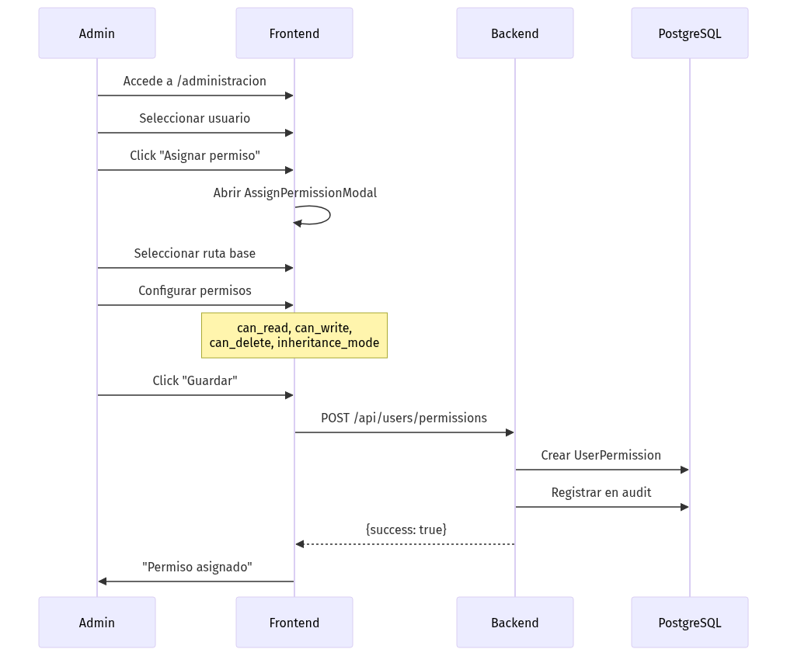
6.2 Verificar Permiso en Tiempo Real
Diagrama 13
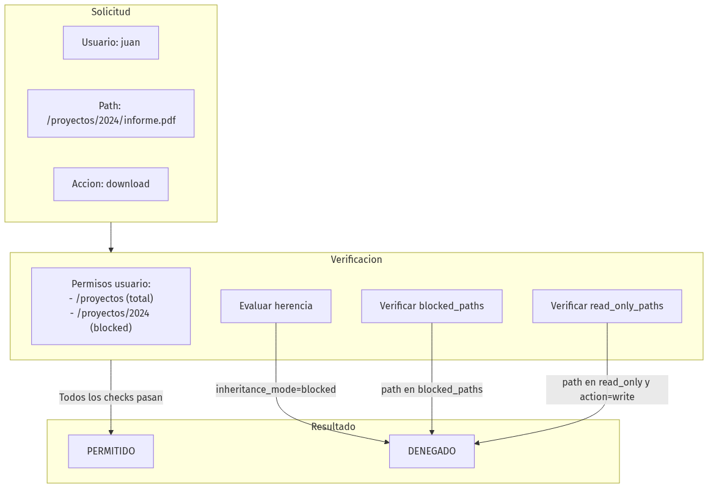
7. Flujo de Papelera
7.1 Mover a Papelera
Diagrama 14
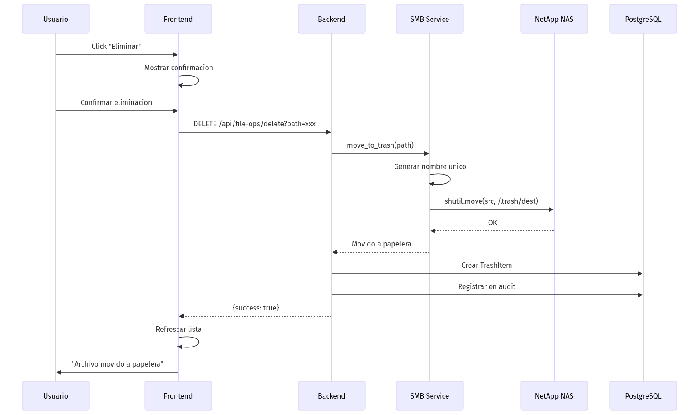
7.2 Restaurar de Papelera
Diagrama 15
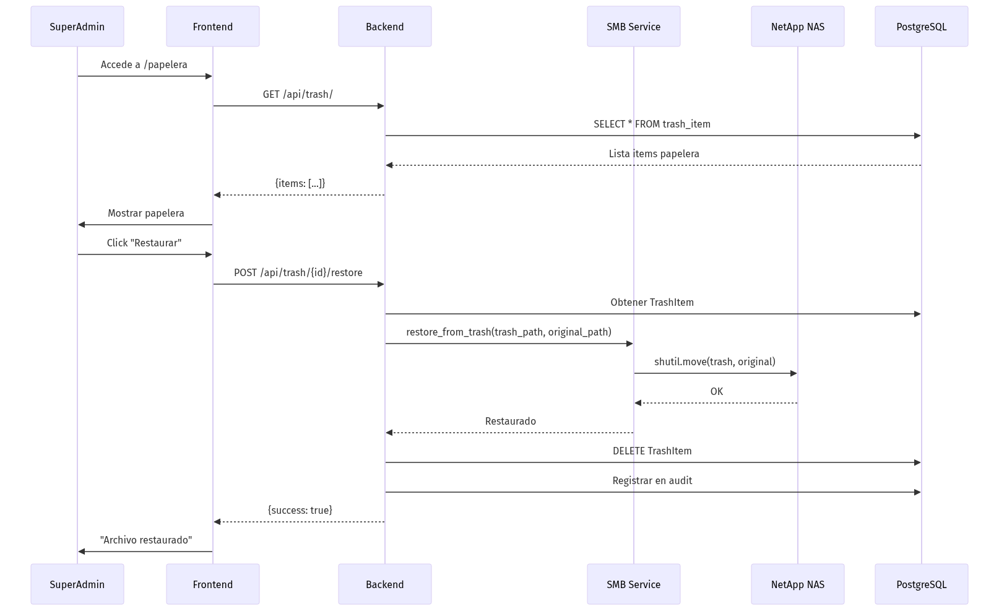
7.3 Limpieza Automatica (Celery Beat)
Diagrama 16
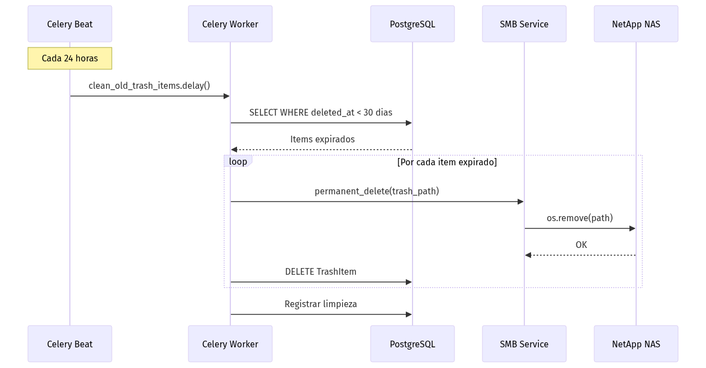
8. Flujo de Compartir Archivos
8.1 Crear Link Compartido
Diagrama 17
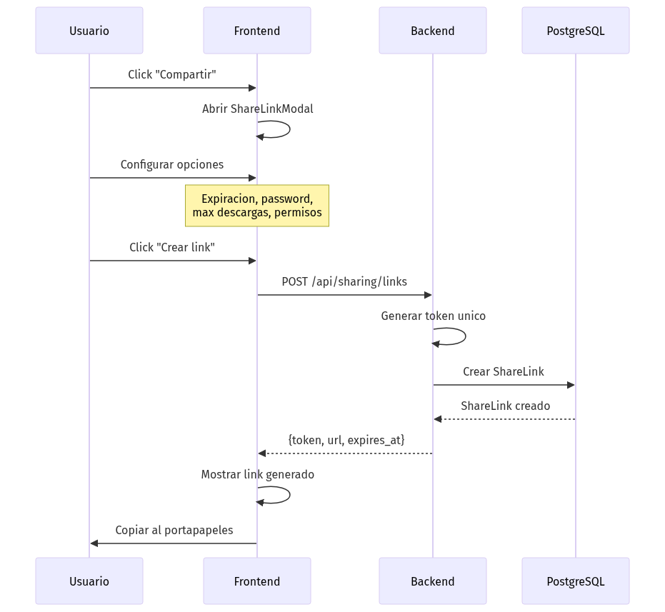
8.2 Acceso via Link Publico
Diagrama 18
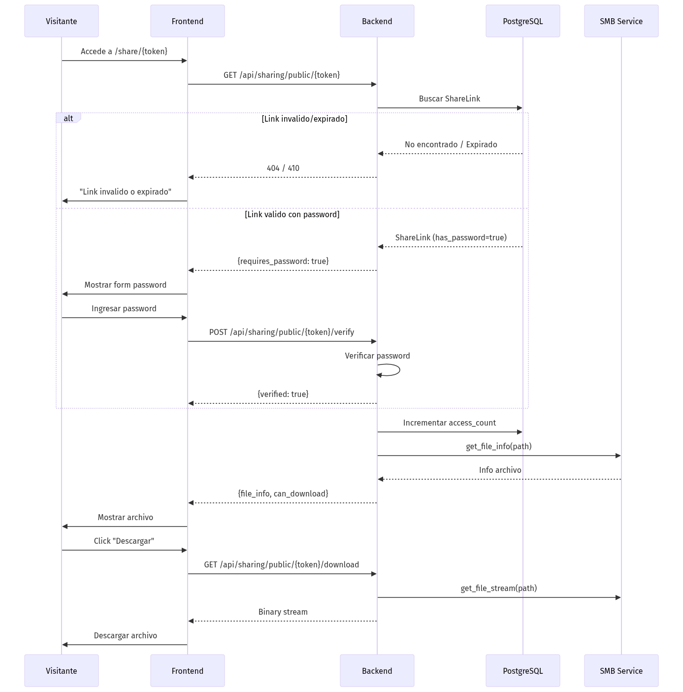
9. Flujo de Notificaciones
9.1 Crear Notificacion (Sistema)
Diagrama 19
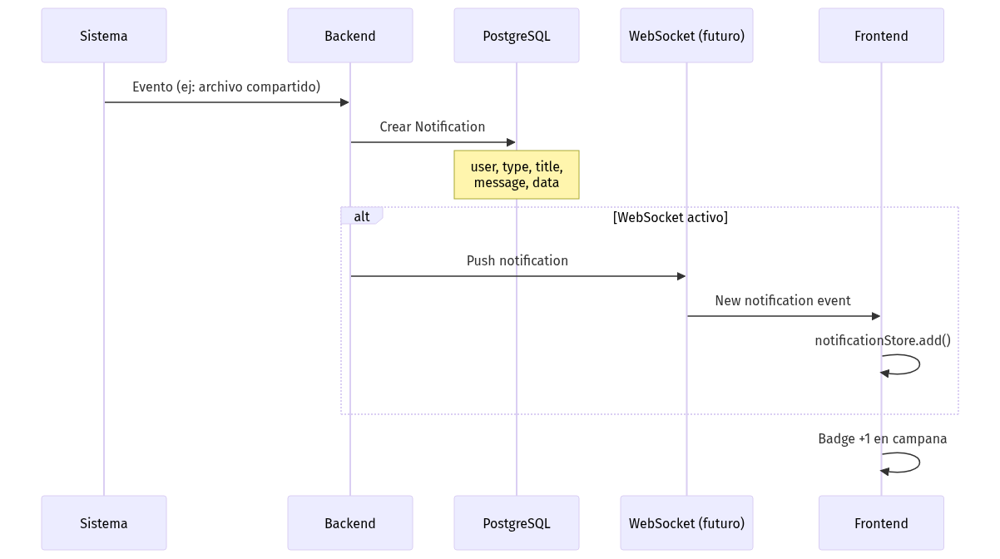
9.2 Leer Notificaciones
Diagrama 20
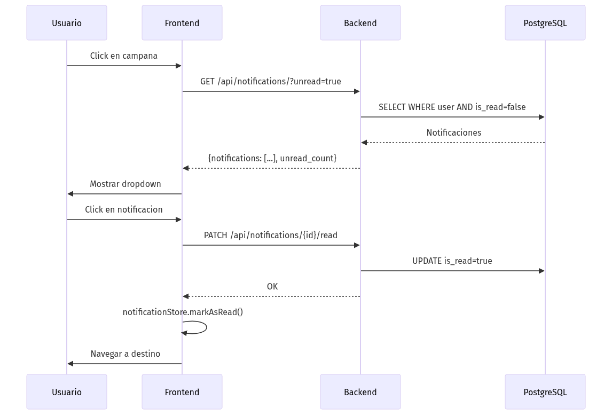
10. Flujo de Auditoria
10.1 Registro de Acciones
Diagrama 21
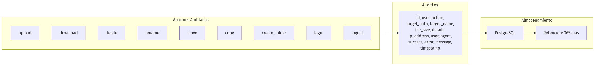
10.2 Consultar Auditoria (Admin)
Diagrama 22
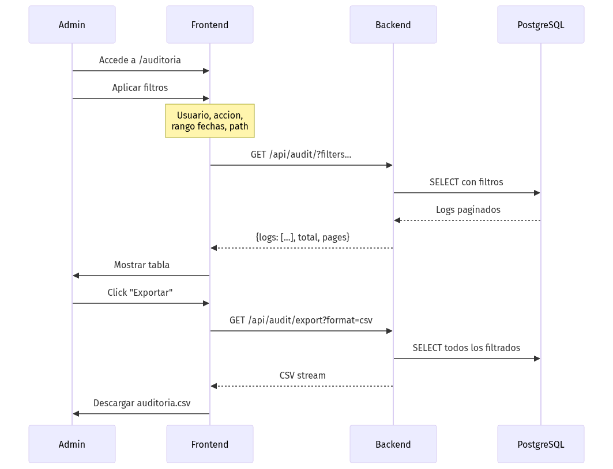
Diagrama de Estados - Archivo
Diagrama 23
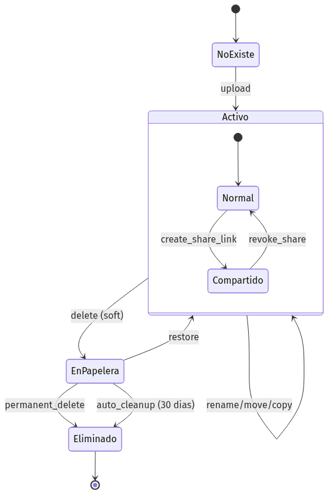
Diagrama de Estados - Usuario
Diagrama 24
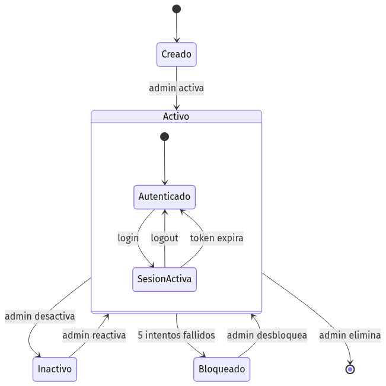